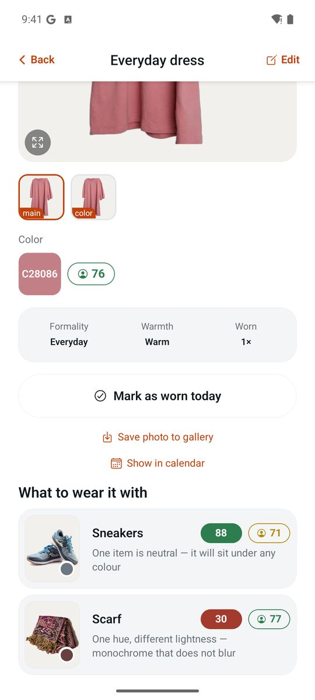
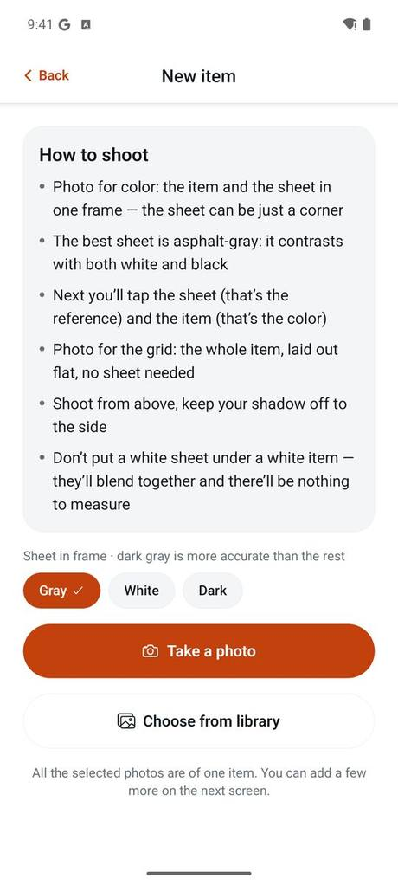
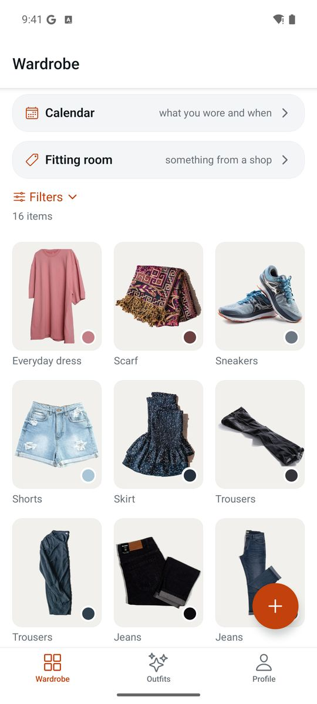
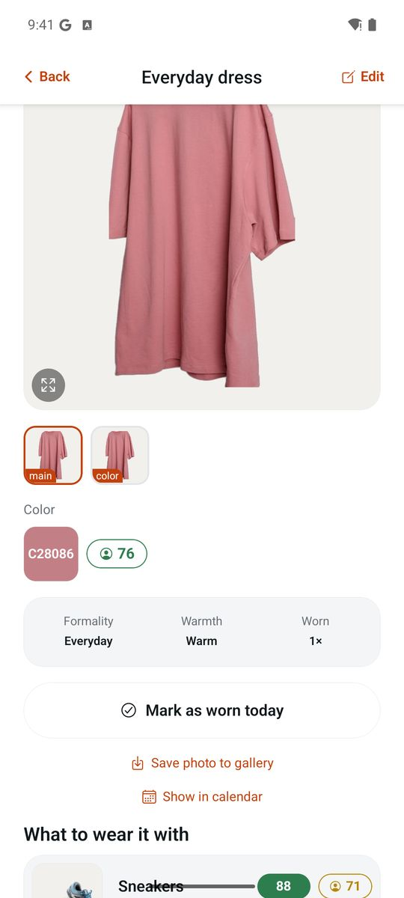
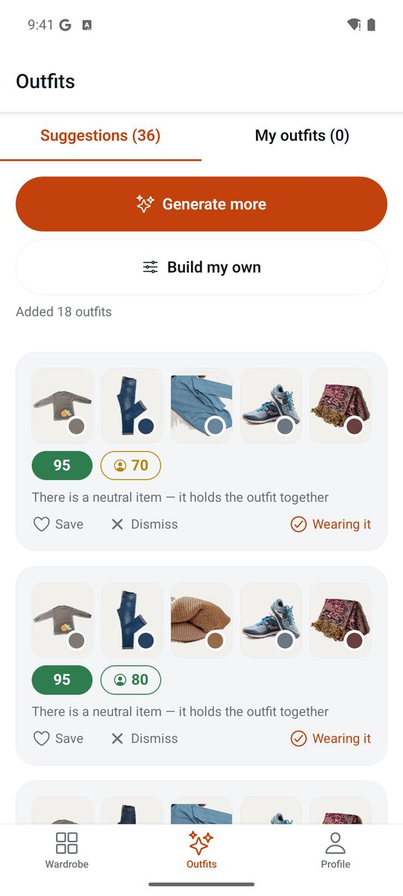
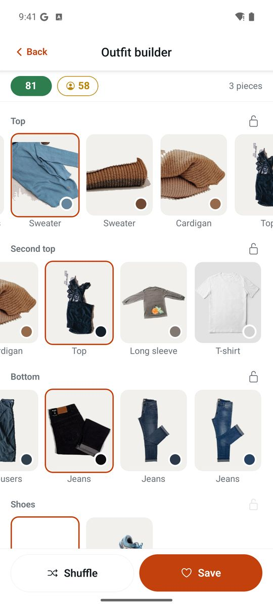
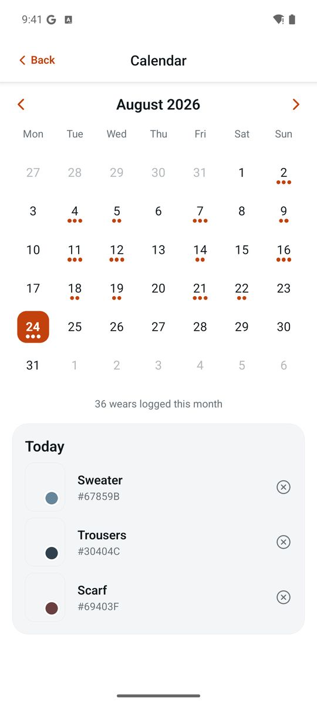
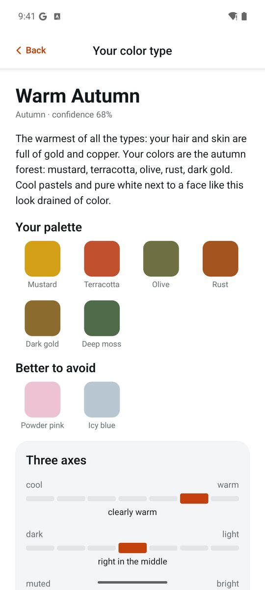
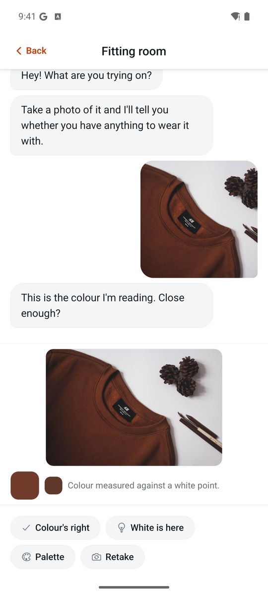
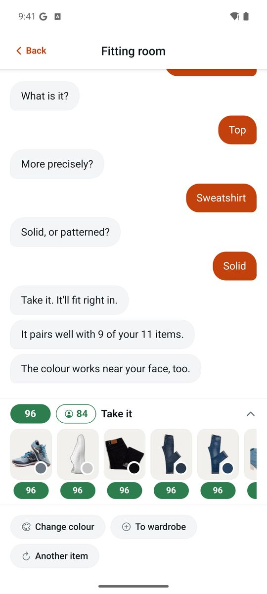

Early access · Free
Ecru catalogues what you own, builds outfits from it, and remembers what you wore. Every time it says two things go together, it tells you why — in one sentence.
The app makes no account · talks to no server · works in airplane mode

01 · Know what you own
Ecru does not try to recognise your clothes. You photograph a piece on a sheet of paper, tap the paper, then tap the garment — and the app measures the colour against that reference instead of estimating it.
About ninety seconds an item. That is slower than an app which cuts the background out for you, and it is exactly why nothing about your wardrobe ever has to leave the phone.
The rules sit on the screen where you shoot, not buried in a help page — including the one nobody warns you about: don't put a white sheet under a white garment. They blend, and there is nothing left to measure.


02 · Know what goes with what
What you usually get
92%
A match score, and no way to find out what it noticed — or to disagree with it.
What Ecru says
Every score in the app is tappable, and every tap opens the reason for that particular pair. The harmony score multiplies four parts — colour, occasion, season, pattern — so a weak part drags the whole thing down instead of being averaged away. A puffer jacket and linen shorts can match perfectly on colour and still not be an outfit.

03 · Decide what to wear

Ecru goes through your wardrobe and returns finished sets, best first. “Generate more” adds to the list instead of wiping it. When the combinations run out it says so plainly — your wardrobe is exhausted, add more pieces — rather than padding the list with things it does not believe in.

Six slots — top, second top, bottom, shoes, outerwear, accessory — and each one only offers what actually works with what you have already picked. Choose a dress and the bottom and second-top slots disappear entirely, because nothing belongs in them. Lock the piece you want to wear, shuffle the rest around it.
04 · Remember what you wore
One tap on a piece — or on a whole outfit — writes the day into the log. The calendar gives you the month at a glance, the count for each piece sits on its card, and a wrong tap is one tap to undo.

05 · Know what suits you
Hair, eyes, skin, gold or silver, the veins on your wrist, how you burn. A minute and a half, every question skippable, and one of twelve types at the end — with a palette, a list to avoid, and three axes showing where you sit.
It tells you how sure it is. A confidence figure, and the runner-up type when you sit on a border. No app should pretend to be certain about your face.
You can overrule it. Pick your type by hand and the choice sticks. If the quiz got it wrong, a person should be the one to fix it — not a formula.
It never reorders your outfits. “Suits you” shows up beside every piece, but harmony alone decides what comes first. A colour type is a convention, not a measurement.

06 · When you're standing in a shop
A piece in your hands, a queue for the fitting room, and one question. Photograph it, confirm the colour, answer three questions with buttons — and Ecru compares it against the wardrobe you already built.


The verdict averages the five best pairs, not the single best one. Any garment finds one lucky match; that is not a reason to buy it.
To hear “take it”, at least three pairs have to reach good together. A piece that works with exactly one pair of jeans is a reason to think again.
There's no sheet of paper in a shop, so you tap a price tag and say “white is here”. The frame recalculates from that point.
07 · Why there is no AI in here
Colour is an average over pixels. Harmony is a formula over colour, occasion, season and pattern. Nothing is recognised, nothing is inferred, nothing is trained on you.
This is the reason the app can explain itself. A model can offer you 92% and nothing more. Arithmetic can show its working — which is why every score here opens into a sentence you can argue with.
No account, no sync, no cloud backup, no analytics. Your wardrobe, your photographs, your outfits and your wear log live in a database and a folder on your phone.
Which cuts both ways, so it is worth saying out loud: delete the app and it all goes with it. “Save photo to gallery”, on each item's screen, is the one thing that leaves a copy outside.
Not offered as a feature — the app simply never needed a network to begin with.
08 · Being straight with you
This belongs on the page as much as the rest. Without it you'd expect the wrong thing.
Category and pattern are chosen by you, from a list. That is the trade for no model.
Colour, pattern, occasion and season. Whether it suits your shape is still your call.
No cloud means no restore. Saving a photo to your gallery is the only copy outside the app.
No thumbs up or down on outfits, and nothing adapts quietly in the background.
Nothing to buy inside it, and nobody else's wardrobe to browse.
Forty pieces is about an hour with a sheet of paper on the floor. It speeds up as you go — but we'd rather you knew now.
09 · Questions
Nothing. There is no subscription, no paid tier and nothing to unlock. With no server to run there is very little to charge for.
For an accurate colour, yes — a corner of one in the frame is enough, and asphalt-grey works best because it contrasts with white and black alike. You can also pick the colour by hand from a palette if a photo lies.
Not today, and we would rather say so plainly than imply otherwise. Nothing syncs, and there is no export beyond saving individual photos to your gallery. It is the honest cost of having no server.
Because they answer different questions. Harmony is how pieces relate to each other; “suits you” is how a colour relates to your face. Blend them and neither can be explained.
There is no date to promise yet, and we would rather leave this blank than invent one. Leave your email and you'll hear from us once, when it's ready to install.
Ecru is for making them usable again — quietly, on one phone, with its reasoning in the open. Leave an email and we'll write once.
One email, when it ships. Nothing else, ever.